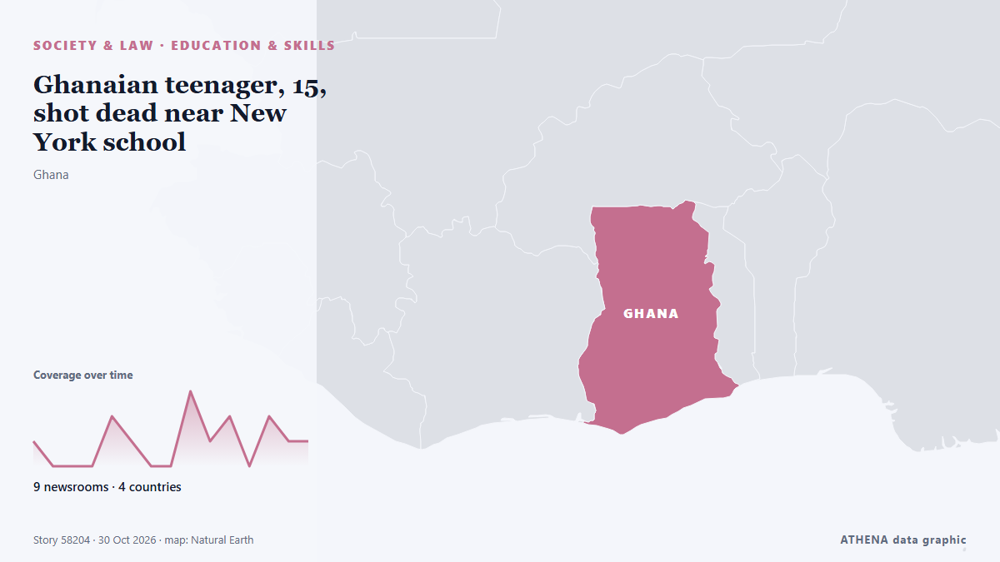

Εκπαίδευση & δεξιότητες
| 18 Οκτ | 0 |
|---|---|
| 19 Οκτ | 0 |
| 20 Οκτ | 0 |
| 21 Οκτ | 1 |
| 22 Οκτ | 1 |
| 23 Οκτ | 2 |
| 24 Οκτ | 0 |
| 25 Οκτ | 1 |
| 26 Οκτ | 1 |
| 27 Οκτ | 3 |
| 28 Οκτ | 6 |
| 29 Οκτ | 8 |
| 30 Οκτ | 1 |
| 31 Οκτ | 0 |
Οι τίτλοι των ειδήσεων παρουσιάζονται στα αγγλικά, όπως δημοσιεύτηκαν.

Ghanaian teenager, 15, shot dead near New York school
A 15-year-old boy originally from Ghana has died after being shot near his school in New York City, as police search for three teenagers in connection with the killing. από Africanews (English)
S Korea to prosecute students cheating with smart glasses
South Korea will file criminal complaints against students caught cheating on a national university entrance exam with smart glasses and toughen penalties for their use, a government official has… από RTÉ News
In Microsoft job cuts, AI is not the real story
Union officials said the proposed cuts would 'weaken' public health research, and called on the school's leadership to 'come clean' on the plans. από Liverpool Echo
MOE to pilot full-day model at 2 kindergartens in 2027, roll out to all MOE kindergartens by 2030
Full-day fees can cost as little as S$3 after subsidies for eligible Singapore citizens. από Mothership
Minara chamber president urges investment in skills, technology and young people
Minara Chamber of Commerce president Ebrahim Patel has urged closer government-business cooperation, warning that geopolitical uncertainty, artificial intelligence and youth unemployment require a… από IOL
One Earth Summit Unites Global Leaders to Advance
Collective Flourishing in the Intelligent Age HONG KONG SAR – Media OutReach Newswire – 30 October 2026 – The third One Earth Summit (the Summit), jointly organised by the Institute of Sustainability… από Laotian Times
Grades Versus Experience: SIM Explains What Students Should Consider When Preparing for Their First Job
Media OutReach Newswire – 30 October 2026 – Singapore’s shift towards skills-based hiring is broadening how candidates are assessed. από Laotian Times
Daylight saving time is spooky this year: What to know about the 2026 clock change
It’s that time of year again—when the sun sets earlier, the days get shorter, and the nights get colder as we say goodbye to daylight saving time (DST). από Fast Company
Clean-up starts as Serbian students movement prepares to govern
Council of Europe (CoE) Secretary General Alain Berset said during his address to the Congress of Local and Regional Authorities that the Serbian stud. από N1 Serbia (English)
Azerbaijan: Rare protests over hijab ban in schools
In Azerbaijan, a new government ban on hijab in schools has provoked rare public protests. από France 24 English
Pakistan, ICARS sign MoU to combat antimicrobial resistance in poultry sector
Associated Press Of Pakistan Pakistan, Canada medical colleges sign MoU for cooperation in education, training The colleges signed the MoU aimed at strengthening institutional cooperation in… από APP (Associated Press of Pakistan)
In Dewan Rakyat today: AI literacy, Brics role and AI Bill on the agenda
KUALA LUMPUR, Oct 29 — The Ministry of Education’s plans to integrate artificial intelligence (AI) literacy... από Malay Mail
SA man nabbed in US for uploading child sexual abuse material
Vico Du Toit was arrested followed an online tip-off to United State's law enforcement. από SABC News
Leader urges students to continue to "peak of progress"
Tehran, IRNA –Leader of the Islamic Revolution Ayatollah Sayyid Mojtaba Hosseini Khamenei has described the determination, resolve, and sense of responsibility toward building a bright future as the… από IRNA (English)
MELISSA RELIEF UNDER SCRUTINY
Nearly a year after Hurricane Melissa devastated sections of Jamaica, a new Caribbean Policy Research Institute (CAPRI) report has raised questions about the country’s ability to turn disaster… από Jamaica Gleaner
Namibian, Chinese universities to expand vocational training through new college
A Namibian student has died after being hit by a freight train near Gurjarpur in Greater Noida, India, with the police investigating the circumstances surrounding his death. από The Namibian
Financial literacy key to achieving Dira 2050
DAR ES SALAAM: THE government has stressed that equipping young people with financial literacy is essential to building the investment skills, entrepreneurship and informed decision-making needed to… από Daily News
Smart classrooms with remote learning facilities introduced at teacher colleges
Smart classrooms equipped with remote learning facilities have been introduced at Sri Lanka’s National Colleges of Education for the first time, with plans to extend the facilities to all 20 colleges… από Daily Mirror
Ochi Day 2026: Road closures in Athens and Thessaloniki – Changes to Metro, tram and bus services
Traffic restrictions will be introduced in both cities on Wednesday, 28 October, for the national holiday parades, with major roads closed and public transport services affected. από ProtoThema English